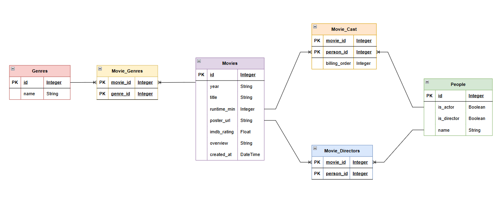

Estructura de la Base de Datos
A continuación se muestran las tablas que conforman el modelo relacional de Movix, con un registro de ejemplo por tabla.
Tabla: movies
Tabla principal que almacena la información de cada película del catálogo.
| id | year | title | runtime_min | created_at | overview | imdb_rating | poster_url |
|---|---|---|---|---|---|---|---|
| 1 | 1994 | The Shawshank Redemption | 142 | Two imprisoned men bond over years... | 9.3 | ||
| Total de campos: 8 | |||||||
Tabla: genre
Catálogo de géneros cinematográficos disponibles en el sistema.
| id | name |
|---|---|
| 1 | Drama |
| Total de campos: 2 | |
Tabla: movie_genres
Tabla intermedia que resuelve la relación muchos a muchos entre películas y géneros.
| movie_id | genre_id |
|---|---|
| 1 | 1 |
| Total de campos: 2 | |
Tabla: people
Almacena actores y directores en una sola tabla; los campos is_actor e is_director determinan el rol de cada persona.
| id | name | is_actor | is_director |
|---|---|---|---|
| 1 | Tim Robbins | True | False |
| Total de campos: 4 | |||
Tabla: movie_cast
Tabla intermedia que relaciona películas con sus actores (is_actor = True). El campo billing_order indica el orden de crédito en pantalla.
| movie_id | person_id | billing_order |
|---|---|---|
| 1 | 1 | 1 |
| Total de campos: 3 | ||
Tabla: movie_directors
Tabla intermedia que relaciona películas con sus directores (is_director = True).
| movie_id | person_id |
|---|---|
| 1 | 2 |
| Total de campos: 2 | |
Resumen del Modelo Relacional
| Tabla | Tipo | Campos | Descripción |
|---|---|---|---|
movies |
Entidad principal | 8 | Catálogo de películas |
genre |
Entidad principal | 2 | Géneros cinematográficos |
people |
Entidad principal | 4 | Actores y directores |
movie_genres |
Relación N:M | 2 | Películas ↔ Géneros |
movie_cast |
Relación N:M | 3 | Películas ↔ Actores |
movie_directors |
Relación N:M | 2 | Películas ↔ Directores |
| Total: 6 tablas — 21 campos en total | |||
Diagrama Entidad–Relación
